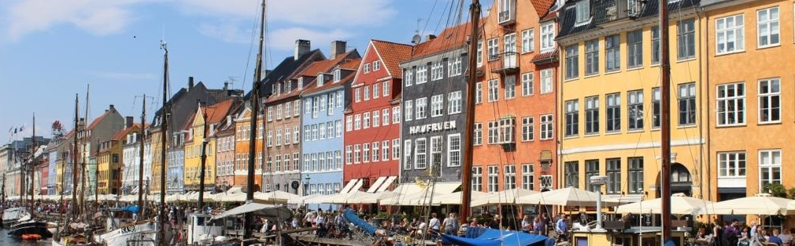

Blog Posts
Bucket List
About Me
Photos

Lyd's Bucket List
10 things I wish to do during my Maymester in Europe:
Eat Dutch Pancakes at Pancakes Amsterdam
Visit either Stockholm, Gothenburg or Hamburg by train
Work on this website at the Royal Library
Visit the coolest coffee shops in Copenhagen
Ride a bike in Copenhagen
Grocery Shop and cook the Danish way (the best I can)
Visit Freetown Christiania
Visit many Danish Bakeries
Drink at a rooftop bar with a good view of the city
Visit Nyhavn